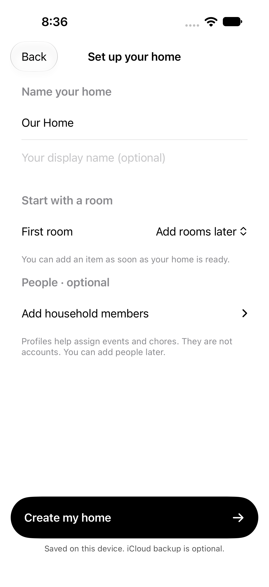
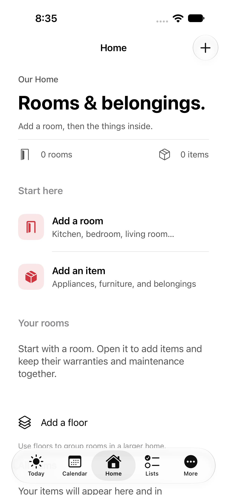
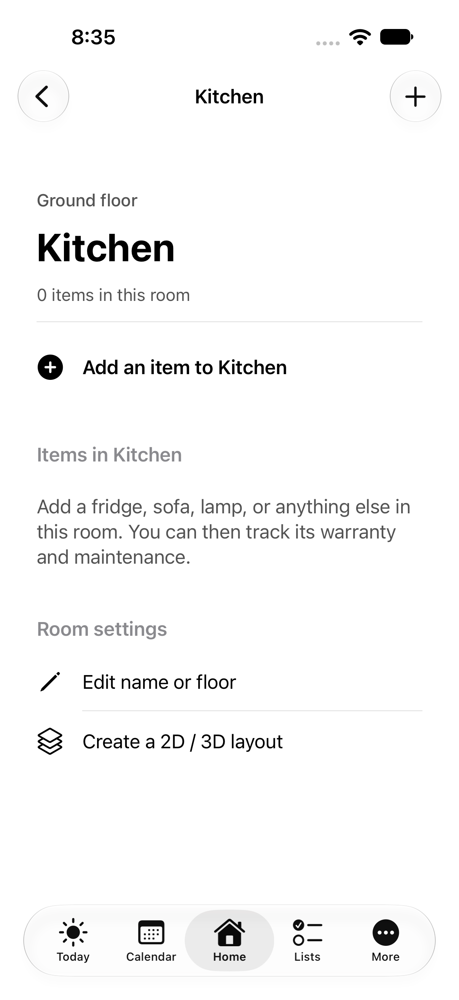
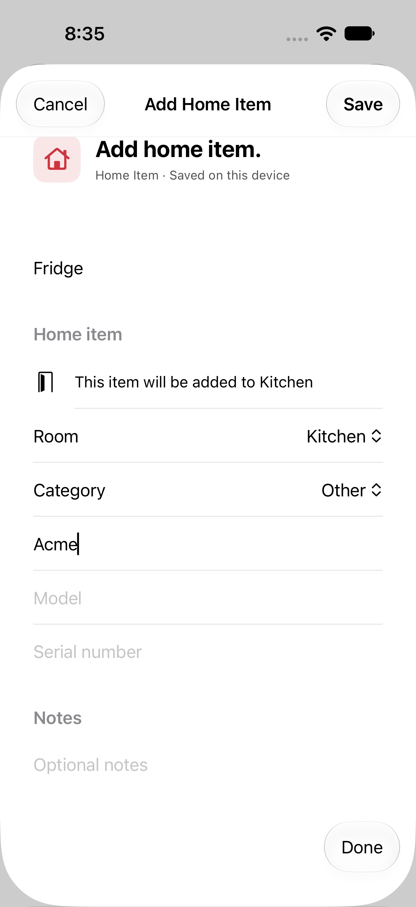
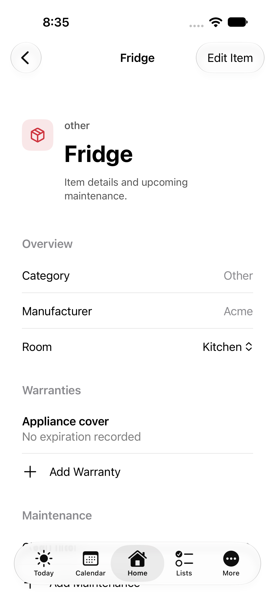
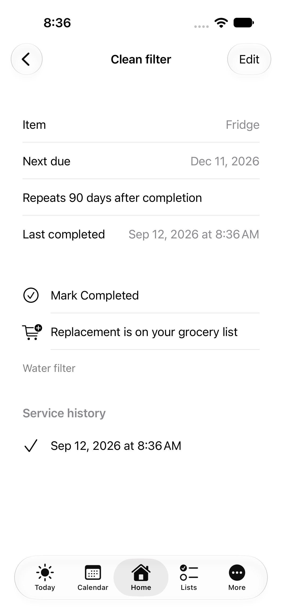
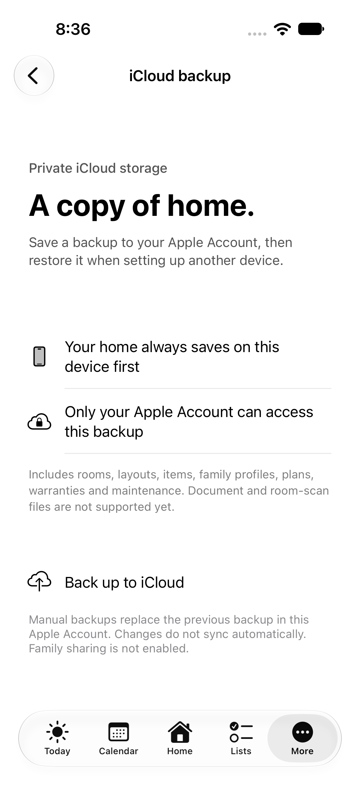

Create a room, add the things inside, and keep their details together. Black-and-white controls, colorful accents, and an offline local store.
01 · Set upMake yourself at home
Name your home and optionally choose a first room. Create my home stays visible and takes you straight to Home.

02 · OrganizeA clear place to start
Add a room or an item from Home. Floors are optional, and rooms can be created without a scan.

03 · Open a roomEverything belongs somewhere
The room shows a direct add-item action. The item's room is already chosen when the form opens.

04 · Add an itemKeep the useful details
Add a name, category and manufacturer. The form makes its destination clear.

05 · Add careCoverage and maintenance
Warranties and maintenance belong to the item. Moving an item preserves those links.

06 · Follow throughComplete, then plan ahead
Record service history, reschedule repeating care and add a replacement to groceries with one action.

07 · ArrangeBuild a measured layout
Save room sizes, drag rooms in 2D, and rotate or tilt the 3D view in the native app.
 08 · Optional backup
08 · Optional backupA private copy in iCloud
Manually back up to your Apple Account. A new installation can review and restore it. Automatic sync and family sharing are not enabled.
